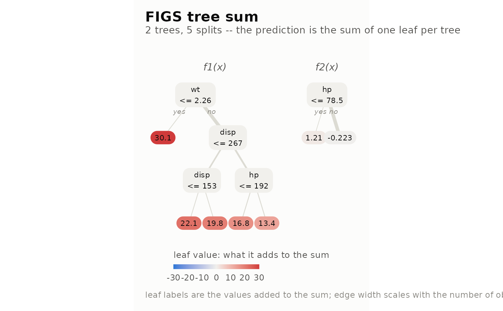
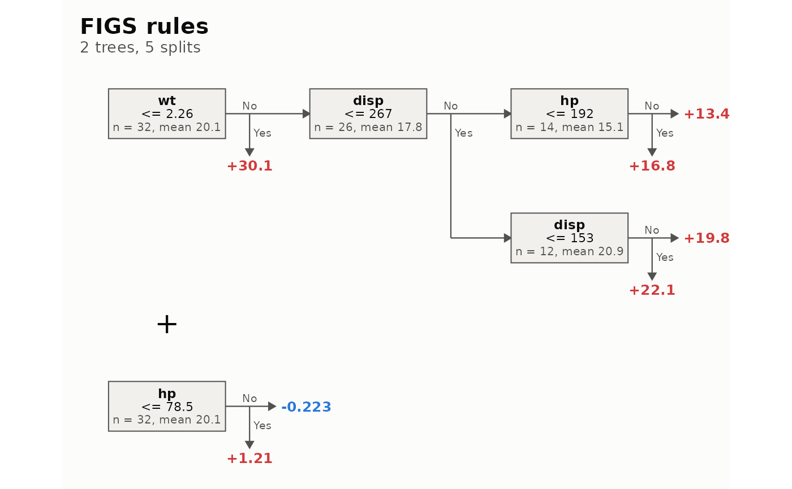
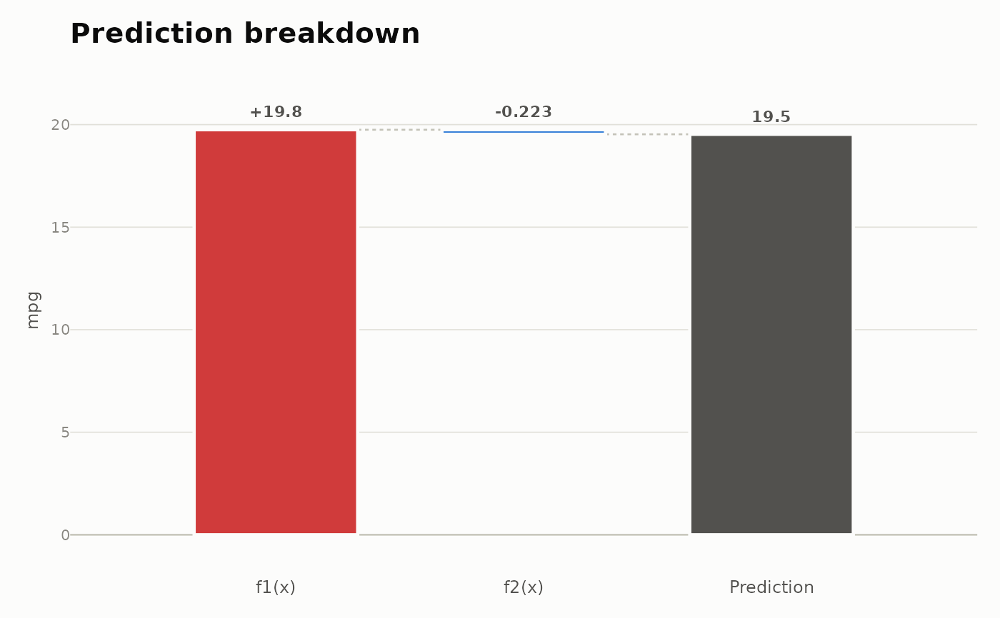
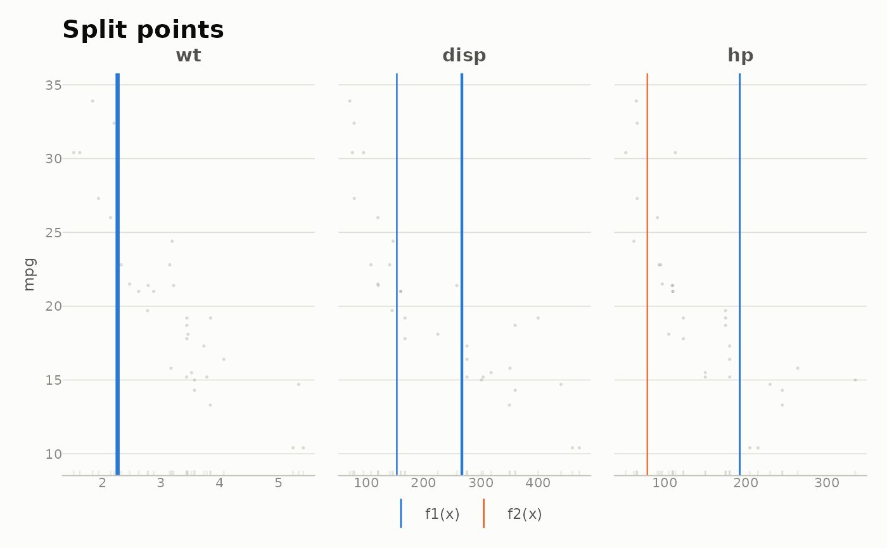
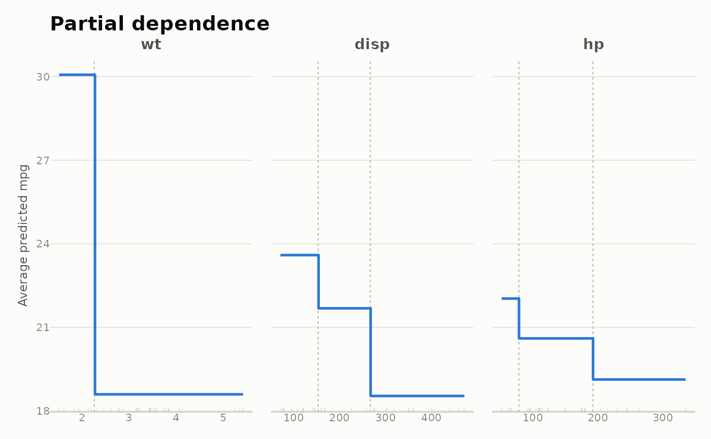
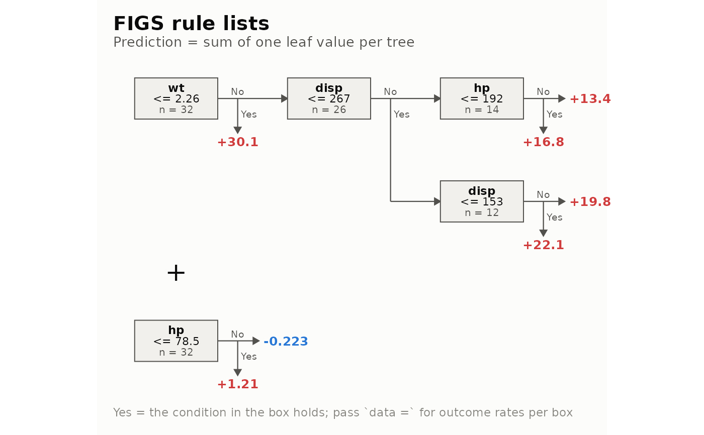

ggfigs() draws a fitted Fast Interpretable Greedy-Tree Sums (FIGS) model
with 'ggplot2'. Five views are available:
"tree": every tree of the sum as a node-link diagram, edge width proportional to the observations that flow through it and leaves filled by their contribution on a diverging scale."rules": every tree as a horizontal list of rules, with+between trees. Each node continues to the right through the child with more nodes below it and the other child drops down, so a tree in which every split has a leaf child reads as a single line."waterfall": where the prediction for one observation comes from, as one bar per tree accumulating to the final prediction."cuts": every numeric cutpoint drawn over the data it was chosen from, one panel per predictor."profile": the exact partial dependence of the prediction on each predictor that carries a split.
With interactive = FALSE (the default) the result is an ordinary
ggplot object, ready for ggsave(), PDF output or further + layers.
With interactive = TRUE it is an HTML widget built with 'ggiraph', with
tooltips that show the full rule behind each node, leaf or cut; this needs
the 'ggiraph' package to be installed.
autoplot() is the same function under the 'ggplot2' generic, and always
returns a ggplot.
Arguments
- x, object
A fitted
figsr_fitmodel object.- type
The view to draw:
"tree","rules","waterfall","cuts"or"profile".- data
The data frame the model was fit on. Required by
"cuts"and"profile", which draw the data, and optional for"rules", which then adds the outcome rate (classification) or mean (regression) to each rule. The fitted model does not store its training data.- newdata
A data frame with exactly one row, the observation that
type = "waterfall"decomposes.- tree_idx
Optional integer vector of the trees to draw in
type = "tree". DefaultNULLdraws them all.- digits
Significant digits for cutpoints and leaf values.
- interactive
Logical.
FALSE(default) returns aggplot;TRUEreturns a 'ggiraph'girafeHTML widget.- ...
Further arguments for the chosen view:
width_svgandheight_svg(inches) size the interactive widget;grid_n(default 160) andfeaturesselect the grid and the predictors of"profile";max_points(default 2000) caps the points drawn by"cuts".
Value
A ggplot object, or a girafe HTML widget when
interactive = TRUE. For type = "rules" the ggplot carries an
attribute "ggfigs_size", the natural c(width, height) of the drawing
in inches, to size ggsave() with.
See also
plot.figsr_fit() for the base-graphics tree diagram.
Examples
fit <- figs(mpg ~ wt + hp + disp, data = mtcars, max_splits = 5)
ggfigs(fit)

ggfigs(fit, type = "rules", data = mtcars)

ggfigs(fit, type = "waterfall", newdata = mtcars[1, ])

ggfigs(fit, type = "cuts", data = mtcars)

ggfigs(fit, type = "profile", data = mtcars)

# the 'ggplot2' generic gives the same plots
ggplot2::autoplot(fit, type = "rules")

# \donttest{
if (requireNamespace("ggiraph", quietly = TRUE)) {
ggfigs(fit, type = "rules", data = mtcars, interactive = TRUE)
}
# }